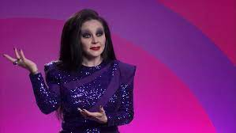

¿Quién formó pate del concuso?
El concurso estuvo progatonizado por:
¿Quién fue el jurado?
El jurado fijo estuvo compuesto por Supremme De Luxe quien tambien fue la presentadoda , Los Javis (Javier Calvo y Javier Ambrossi) y por Ana Locking. A estos cuatro , se iban turnando otr@s famos@s como Jon kortajarena (modelo), Paca La Piraña (vedette), Carlos Areces (actor y cantante), Bad Gyal (artista musical), Alaska (cantante), Susi Caramelo (humorista y presentadora) y Envy Peru (ganador de la primera edición de Drag Race Holland).

|
|||
|  |
RESUMEN CAPITULO 1:
La categoría inicial era “de mercadillo”, disciplina que, como en otras ediciones internacionales, estaba centrado en la costura. Un campo en el que The Macarena no convencía al jurado, Ana Locking y Los Javis, que para este estreno unían a sus filas Jon Kortajarena. Una etiqueta suelta y unos bajos mal cosidos eran la principal razón por la que caía al temido ‘bottom’ del primer reto. La eliminaba —no con mucha soltura y algo encorsetada— Dovima Nurmi al ritmo del tema ‘Sobreviviré’ de Mónica Naranjo, enorme acierto musical que pone el listón muy alto de cara a otros ‘lip sync’ venideros.
Y a pesar de que The Macarena ciertamente tenía mucho que aportar al programa, sobre todo en el terreno cómico, su falta de producción se hacía más que evidente en la pasarela, por lo que su nominación era algo completamente justo. Quizás no tanto su expulsión. Su ‘look’ no era el mejor, pero el de Pupi Poisson iba muy de la mano con el suyo. Esta última, cuyo ‘look’ estaba inspirado en el servicio de limpieza, lograba salvarse del reto gracias a su aportación cómica, faceta que puede llevarla lejos en la carrera si logra pulir una estética que flaquea sobremanera.
RESUMEN CAPÍTULO 2 :
El reto de la semana era un desafío musical por equipos, uno liderado por Pupi y otro liderado por Hugáceo, ganador del reto anterior. Las participantes debían hacer un homenaje a las divas, y así mismas como divas que son. Poison y Crujiente elegían a sus compañeras una a una, y Vulcano se quedó sin que nadie la reclamase. Ella pidió entonces ir con el equipo de Pupi, y ahí algunas compañeras descubrieron que la canaria habla. Será porque su drag es muy visual y no suele animar a una sala con micrófono, pero es verdad que no da un ruido, y eso en Drag Race es malo. Hay que robar el foco tanto como se pueda, sin caer en el empacho.
Los equipos, que se bautizaron como Las Cinco y Cuarto (Dovima, Arantxa, Vulcano, Inti y Pupi) y las Metal Donnas (Hugáceo, Carmen Farala, Sagittaria y Killer Queen), tenían que componer un verso de una canción, y luego presentar el tema con una coreografía. El rival más débil parecía entonces Hugáceo Crujiente, y ella misma era consciente de sus limitaciones.
De forma paralela, estamos viendo que Pupi Poison choca con su compañera Killer Queen, que no la termina de tragar. No se puede negar que este tipo de cosas dan vida al programa, siempre que no se caiga en el acoso, y de momento, Pupi solo pone caritas mientras Killer cuenta su película.
En la prueba ya en sí, el equipo liderado por Pupi Poison lo hizo nada más que regular; Pupi era la única que destacaba. En el de Hugáceo, el peso lo llevó Carmen Farala, que además cantaba bastante bien y se mostró como una rival muy feroz, que quería esa victoria que se le resistió en el primer programa.
En la pasarela, la categoría era tributo a La Veneno. Casi nada. Y con Paca la Piraña, amiga de La Veneno, como jueza invitada. En general, las modas ofrecidas fueron una delicia. Nos enseñaron diferentes versiones de Cristina, con guiños a su vida real y también a la serie.
Finalmente, Carmen Farala se alzó con la victoria, algo que parecía que estaba cantado, y Pupi estaba salvada. Del bottom, los jueces decidieron salvar a Inti, por lo que Arantxa y Vulcano se vieron las caras en lipsync a vida o muerte. La canción no podía ser más propicia: Veneno pa’ tu piel, de La Veneno.
El traje de Vulcano, con un gran tocado, le impedía hacer demasiadas florituras en el escenario. Finalmente, Arantxa fue la concursante que se quedó, y yo que me alegré; el programa necesitaba un perfil como el suyo, divertido y alegre. Vulcano se fue un poco mosca, ya que creía que no se merecía estar en lo más bajo, que al menos debía estar salvado.
RESUMEN CAPÍTULO 3 :
En la pasarela, la categoría era “mis raíces”. Las reinas debían mostrar sus orígenes a través del vestuario. El tema dio mucho juego y estuvo muy bien tratado por todas, con perspectivas muy diversas.
Cuando se juzgó a Inti, Ana Locking le dijo que había cosas en su traje que podría haber mejorado, y esto no sentó nada bien a la participante. Javier Ambrossi vio que le estaba sentando mal la valoración, y le dijo que eran opiniones, que tome las que considere que le ayudarán y que olvide el resto. La participante no entendía la crítica, y parecía segura que, de haber llevado el traje más lejos, también habría sido señalada por excesiva.
Inti tenía claro que iba a estar en la parte baja de la clasificación y se hundió. Tanto, que hizo algo que no había sucedido nunca en el programa: antes de escuchar la valoración definitiva de los jueces se quitó su drag y se vistió de calle, dispuesta a abandonar.
El programa se paralizó, dejó de ser tal y como lo conocíamos. Supremme de Luxe tuvo que entrar para hablar con Inti, intentando que reflexionase. La concursante estaba triste porque cree que el jurado no entiende su arte y está cansada, a pesar de que solo llevamos tres programas. Ni la presentadora ni sus compañeras le hicieron entrar en razón.
De vuelta a la pasarela, se confirmó que Inti había decidido abandonar de forma voluntaria. La tensión y el malestar cortaban el aire. Esta salida rompía la dinámica del capítulo, que se finalizó como pudo. Pupi Poison y Sagittaria fueron las mejor valoradas, y se eligió a Sagittaria como la mejor de la semana.
Llegaba el momento de anunciar el playback a vida o muerte, y se propuso a Dovima Nurmi hacerlo a solas, entendiendo que de todas formas estaría salvada. Entendemos que, en circunstancias normales, habría peleado junto a Inti, a quien ya se consideraba oficialmente la expulsada de la semana.
RESUMEN CAPÍTULO 4 :
Una de las pruebas más admiradas por los espectadores del famoso programa estadounidense es el Snatch Game, que consiste en la elección por parte de las drags de un personaje icónico con el que tendrán que dialogar. Bien pues, desde la noticia de la llegada de este formato a nuestro país, multitud de usuarios en las redes sociales han fantaseado con la que podría ser esta prueba, con figuras como Paquita Salas o la duquesa de Alba.
Con la colaboración especial de Samantha Hudson y Kika Lorace, nuestras reinas se han tenido que enfrentar antes a un mini-reto vinculado con el verde, en el que ha salido triunfadora Pupi Poisson. Con el lema que le caracteriza a Supremme de Luxe «No la caguéis», comienza un reto complicado en el que (sorpresa), vuelve a haber rifirrafes entre nuestras reinas.
Dakota, Karina, Gioconda, Cayetana, Belén Esteban, Isabel Díaz Ayuso y Encarnita. Tras un par de pizzas, cabezas liberales y fajas usadas que no han cuadrado demasiado, ninguna de ellas se corona como la ganadora del primer Snatch Game español, dejando en aire los «Págame» de Belén y la canción de las mascarillas de Karina, dos papeles clavados por Arantxa y Pupi, respectivamente.
El jurado ha deliberado sobre las ejecutivas y ha comentado brevemente lo que ha sido el Snatch Game de esta primera edición. Dovima Nurmi salvada y las demás en tensión, el jurado encabezado por Supremme de Luxe manda al Lip Sync a Hugaceo Crujiente y a Arantxa Castilla La Mancha, mientras Killer Queen se corona como la ganadora del programa.
RESUMEN CAPÍTULO 5 :
La categoría era “arte español” y la pasarela fue sobresaliente. Dovima Nurmi salió como un cuadro desmontado de Dalí, con el lienzo cayendo por detrás como una capa, y Pupi Poison fue una versión gamberra de Las Meninas de Velázquez, que enseñaba su ropa interior en mitad del desfile.
Killer Queen homenajeó dos cuadros de Salvador Dalí, La persistencia de la memoria y Jirafa en llamas; además, llevó un bigote picudo en homenaje como al pintor. Hugáceo Crujiente, en su línea, hizo una interpretación libre de la categoría y fusionó el aspecto físico de Miguel de Cervantes con la obra del ilustrador Ricardo Cavolo.
Sagitaria, en un look sencillo, pero completo, emuló la Mujer con cabeza de rosas de Salvador Dalí, aunque por la pasarela se pisó el traje un par de veces. Y por último, Carmen Farala se inspiró en la menina de Miró y llevó un traje que soltaba pintura en el escenario, un truco que hasta ahora no habíamos visto en las más de 20 temporadas del programa entre versiones estadounidenses y de otros países. ¡Bravo Carmen por demostrar que siempre se puede innovar!
Según la valoración de los Javis, Dovima Nurmi estuvo muy bien en la prueba de interpretación y que había hecho reír, aunque Supremme de Luxe la vio baja. A mí Nurmi me pareció de las más flojas, y tampoco la vi tan graciosa como nos la querían vender, aunque el personaje tampoco daba para más.
A Killer le criticaron que le faltaban matices (su personaje era una loca de remate que no cambiaba de tono en toda la prueba) y también criticaron a Hugáceo por no fluir en su interpretación. A Sagittaria le dijeron que había sido “una fantasía de Angy”, que tampoco me pareció tanto desde casa, y a Carmen Farala le aplaudieron como era de esperar.
El momento más duro de la noche vino tras las críticas. Las compañeras debían señalar a una compañera para irse a casa, y todas dijeron que Hugáceo. Hugáceo, por su parte, apuntó a Killer Queen.
En el top estuvieron Carmen Farala y Pupi Poison, quien al fin gana un reto. Dovima y Sagittaria se salvaron en el quinto episodio de Drag Race España, y al lipsync fueron Hugáceo Crujiente y Killer Queen. La canción que tenían que defender era espectacular, y aunque en algunos momentos parecía que Killer no se sabía bien la letra, terminó ganando el último desafío.
RESUMEN CAPÍTULO 6 :
De hecho, descubrimos que el traje de Carmen Farala se lo había hecho en el propio programa en los ratos libres. Al parecer, Dovima Nurmi y ella iban a tener un look basado en el mismo estilismo de Rosalía, y Carmen, por propia voluntad, propuso que Dovi siguiese sus planes y ella improvisó un nuevo diseño que estuvo excelente.
En ese momento tuvimos la sensación de no estar viendo Drag Race España, sino “las mejores amigas de Drag España”. Dovima aplaudió el cariño de Carmen Farala, que le había dejado sus complementos, e incluso se ofreció a dejarle su propio traje que ya había descartado.
Ahí se cayeron dos caretas. Dovima demostró que no es tan zorra como se quiere pintar a sí misma. Que es una drag muy sensible y vulnerable. Da la sensación de que la vida no le ha tratado demasiado bien y que se ha puesto muchos muros a su alrededor. Ha conectado con Carmen y parece que está aprendiendo a dejarse querer, que por primera vez permite a otras personas cuidar de ella.
Por su parte, Carmen también demostró que tampoco es tan zorra. Que en los primeros programas parecía una gran bitch, que multiplicaba su malicia cuando se aliaba con Dovima y Sagittaria.
Finalmente, Carmen Farala fue la mejor de la noche, teniendo un programa redondo con la victoria en el mini reto y el maxi reto. Killer se salvó, Pupi tras algún toque de atención también, y finalmente nos encontramos a Dovima Nurmi y Sagittaria en la cuerda floja.
Como consecuencia, en el playback a vida o muerte, Dovima decidió no competir, regalando a Sagittaria su continuidad en el programa. Podría haber hecho un lipsync flojito, como el de Charlie Hides contra Trinity Taylor, o un despropósito divertido como el de Tammy Brown en la primera temporada. Pero Dovima optó por el mutismo absoluto: se quedó callada, sin bailar. Hasta con las marionetas había tenido más vidilla.
Más tarde, reconocía que estaba ya bloqueada (es la única concursante que todavía no había ganado nada) y que Sagittaria se merecía más quedarse. En su despedida, escribió en el espejo que para ella la ganadora es Carmen.
RESUMEN CAPÍTULO 7 :
En este último episodio de competencia antes de la gran final, las concursantes se enfrentaron a uno de los mayores retos del programa y que tanto esperábamos después del Snatch Game: el transformar a hombres muy varoniles en auténticas reinas del drag.
Los conejillos de indias de la edición española fueron cuatro jugadores del Madrid Titanes de rugby, el primer equipo inclusivo de este deporte en España. Aunque al principio les costó hacerse con la estética drag, enseguida se metieron en el papel a la perfección, incluido el temido tuck, o como dijo Pupi Poisson, "encolarse".
Con una inspiración totalmente british, Carmen Farala presentó a su hermana "por parte de padre", Carla Farala. Con una clara influencia de Sherlock Holmes, la reina creó en una sola noche dos looks perfectamente rematados y elaborados donde el principal protagonista era el estampado tartán rojo.
La perfecta ejecución de Carmen Farala le valió un pase directo a la final, convirtiéndose en la primera concursante de esta edición y de la historia de Drag Race España en clasificarse.
Sagittaria fue la concursante que peor pronóstico tenía para este episodio, ya que también se trata de un maxirreto donde la costura es un elemento muy importante y es uno de los puntos más débiles de esta reina.
Aunque la drag creó dos looks de superheroínas, los jueces consideraron que la concursante no dio todo lo que se esperaba de ella y la enviaron al lipsync a tres donde tuvo que luchar por su puesto en el programa.
Por su parte, Killer Queen nos presentó a Slayer Queen con un estilismo inspirado en la época dorada de Los ángeles de Charlie, de "espías hermanas que vienen a cargarse a alguien en un cóctel", como explicó la misma Killer.
Ambas utilizaron el mismo look, aunque con ligeras modificaciones, como la abertura de la falda (Killer en el centro y Slayer en un lateral) o las mangas (mientras que Killer va con manga larga, su "hermana" no lleva mangas, pero sí guantes).
Pupi Poisson nos presentó anoche a Pepi Pasión, asegurándonos las risas sobre la pasarela. Ambas salieron como las nuevas animadoras del equipo Madrid Titanes, dispuestas a darlo todo. Tanto, que Pepi se lo tomó al pie de la letra y acabó rompiendo uno de sus tacones.
Sobre la pasarela, ambas llevaron la misma peluca y el mismo maquillaje, dando la impresión de que realmente estaban emparentadas. Para el look, ambas fueron vestidas de la misma manera, con un jersey morado con un lazo en el pecho, una falda —aunque la de Pepi era roja y más larga—, unos pendientes de conejito de peluche y unos pompones con los que se divirtieron mucho sobre el escenario.
Sin embargo, después de todo el recorrido que hemos visto de Pupi a lo largo del programa, sorprende que para la semifinal optase por un estilismo tan simple y no apostase por el look que vimos en el lipsync, lleno de pedrería y con una silueta más favorecedora.
Este gran fallo hizo que la concursante perdiese la batalla y se convirtiera en la septima eliminada de la edición, quedando a las puertas de la gran final.
RESUMEN CAPÍTULO 8 :
El episodio empezó repasando el paso de cada una de las reinas por el programa y como la primera eliminada fue The Macarena, comenzaron por ella analizando sus looks y por supuesto le preguntaron cómo se sintió al ser la primera expulsada a lo que ella respondió que le dolió como comerse un bocadillo de tortilla con alioli antes de dormir la siesta, pero que por edad prefirió ser ella antes que otra reina más joven ya que estaba preparada para recibir un golpe así de duro. Drag Vulcano era más explosiva que el Maspalomas en temporada alta, sin embargo fue la segunda expulsada. No esperaba estar en el bottom y afirmó tener talento de sobra. En las imágenes inéditas pudimos ver cómo recriminaba a sus compañeras que no se tomaban en serio los ensayos. La reina de la fantasía y de la plataforma probablemente sea la más Capricornio de la temporada.
Inti no pasó desapercibida, desde sus looks a su abandono, la reina de la diablada se marchó sin hacer su lip sync muy dolida por la decisión del jurado. A pesar de ello, quiso agradecer a sus compañeras y al jurado la oportunidad de estar allí, pero en ese momento no podía más y pensó que fue la mejor decisión. Después del primer repaso del concurso de las primeras expulsadas, vino otro repaso pero esta vez el que se dieron entre ellas mismas porque Reading is FUNdamental y las dagas volaron. Siguiendo el repaso de las expulsadas, la siguiente fue Hugáceo Crujiente.Sus looks no han pasado desapercibidos por la originalidad, el arte y la conceptualidad. La valenciana también supo conquistar al jurado y a la audiencia en la triple pasarela donde apostó por outfits más cercanos a la realidad aunque sin dejar atrás el concepto drag diferente.
Tras Hugáceo, Dovima Durmi fue la siguiente expulsada. Antes de ver su paso por el concurso, Supremme Deluxe trató de resolver el misterio de su enfrentamiento en el piso de Barcelona, pero prefirió callar y las malas lenguas de las redes creen saber el verdadero motivo aunque seguirá siendo un misterio. Dovima y poder de bad bitch no dejaron indiferente a nadie. Ha demostrado tener buen gusto por la moda y ha sabido crecer como drag y concursante, pero nos dejó un momento amargo cuando se derrumbó en el lip sync contra Sagittaria. Las reinas tuvieron la oportunidad de juzgar los looks de sus compañeras en Monada o cagada y estuvieron de acuerdo en que había pocas cagadas.El paso de Pupi Poisson por el concurso ha sido como un torbellino de humor y es una de las reinas más queridas por la audiencia y por sus compañeras, que la coronaron Miss Simpatía. Pupi ha sabido jugar sus cartas y el humor ha sido su fuerte, pero también hay que destacar su valentía y su humildad al presentarse a un concurso ya que es una drag con mucho recorrido y presentarse a un formato donde la van a juzgar personas con el mismo camino que ella dice mucho de Pupi Poisson, que será de las más recordadas de la primera temporada.
Otra reina que será recordada será Carmen Farala, la sevillana ha demostrado que con un trapo mugriento y un calcetín sudado puede confeccionar un vestido para ir al Baile de la Rosa. Farala ha sido talento, belleza y trabajo además de tener humor y haber sido la ganadora de innumerables retos, y por ello es finalista, como su compañera Sagittaria, la reina de la alta costura y de la elegancia, ha sabido acertar en las pasarelas y sacar su lado más sensual en los lip syncs. Su snatch game fue de los mejores ya que resucitó a Encarnita y el baptisterio romano del siglo I, al igual que el de Killer Queen poniéndose en la piel de Díaz Ayuso pero además, Killer Queen se ganó al jurado con su evolución, sacando tímidamente su lado más bitch. Este domingo sabremos quién es la ganadora y la reina drag de España. La corona está entre Carmen Farala, Sagittaria y Killer Queen y tú ¿Quién crees que merece la corona?.
LA GRAN FINAL!!!
La pasarela final fue 'tu mejor drag' y cada una llevó un traje que las identificase. Killer Queen salió con un look inspirado en Úrsula de La Sirenita, quien a su vez bebió de la drag queen Divine. Carmen Farala llevó un traje largo, en la línea de la modelo de pasarela que lleva dentro de sí. Alrededor de la cintura llevaba una sobrefalda con mucho volumen, que le dotaba de una hermosa silueta (y ciertas dificultades al andar, pues hasta se tropezó en su gran día). Y Sagittaria, por último, llevaba un traje negro que jugaba con cierta fantasía de desnudez y que le quedaba como un guante, y que potenciaba su delicada belleza.
Tras todo tipo de cumplidos por parte de los jueces, llegó la hora del lipsync final. Los jueces dejaron claro que se juzgaría tanto la actuación como toda la trayectoria en el concurso.
El tema elegido como broche de oro de la edición fue 'La gata bajo la lluvia' de Rocío Dúrcal. Un tema dramático y lento, que no invitaba a las reinas a abrirse de piernas ni a hacer florituras físicas. Estaban obligadas a desgarrarse por dentro si querían la corona.
Killer lo dio todo con mucha elegancia, Carmen estaba jugando bien sus cartas, y Sagittaria sin embargo parecía más desubicada. Casi al final de la canción, Carmen Farala se marcó un Roxxxy Andrews con un 'wig over wig', y se arrancó la peluca para enseñar otra diferente. Así, terminó la canción con el cabello mojado, un detalle que complementaba la letra de la canción, y que resultó completamente efectista.
El jurado habló a continuación, y sin sorpresas, Carmen Farala fue coronada como la primera reina de Drag Race España. "Ha sido un camino duro y no me creo que tenga esto en la mano", decía al recibir la corona y el cetro de ganadora.
Ciertamente, Carmen Farala se ha coronado como la mejor de la edición con todas las de la ley. Recordemos que ha sido quizá la reina que mejores modas ha ofrecido, algo que tiene un mérito doble pues ella misma se hace los vestidos.